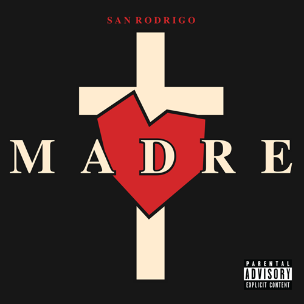
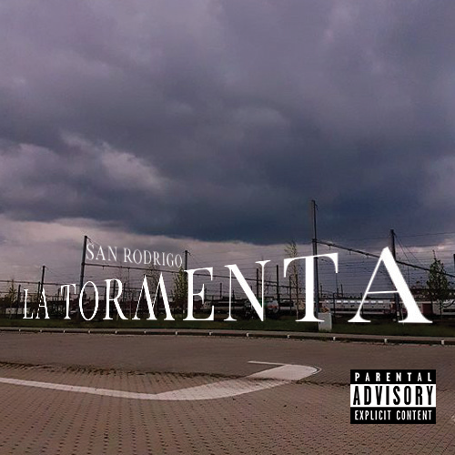

S A N | R O D R I G O
-
M A D R E
San Rodrigo's debut album, Madre, is about his late mother who passed away when he was a child. He hoped to become succesful with this to honor his mother and provide aid for other families in Puerto Rico. And he succeded.
-
L A | T O R M E N T A
A terrible storm has passed and many houses were destroyed. This album is to help contribute in the rebuilding of his city. In this he spreads hope to the people of the country and convince them that God had not left them behind.
-
C E V R A D A
This album is about a woman who was broken inside. She'd wear a mask every day outside. And when she's home, her porcelain face shows the cracks. This album is about his sister.
-
D E C E P T I O N
We all have demons inside us. Some are able to take over and play games with others. She was percieved as an Angel but Rodrigo knew that that statement was not true.